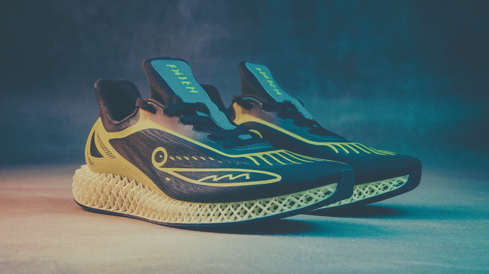
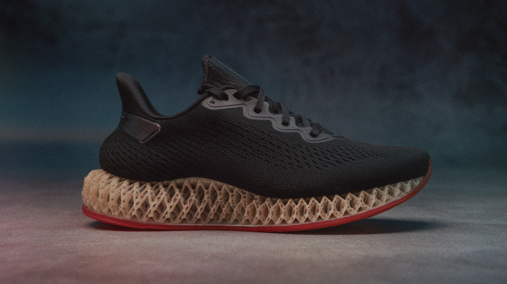

SYRE™ — Bergensk skoinnovasjon
1. Sammendrag
SYRE™ — Bergensk skoinnovasjon — PubHealthcare, Bergen. MASTER utvikler; RAILS/ deployer apper.
Visjon: Fottøy som vokser frem i Bergen — håndverk og materialer testet lokalt før noen lover masseproduksjon.
Sammendrag (1 side)
| Idé | SYRE™ — Bergensk skoinnovasjon |
| Spor | produkt |
| TRL | 3–4 |
| Prosjektsum 12 mnd | NOK 550 000 |
| Legat-søkt | NOK 50 000 |
| IN-mål | NOK 450 000 |
| Topp 3 kostnader | Design og utvikling (12 mnd) (220 000 NOK); Materialer, såler og 3D-print (95 000 NOK); Prototypepar (5–10) og verksted (85 000 NOK) |
Lokal prototyping og bærekraftig fottøy — fem–ti par først, ikke fabrikk på dag én.
Fottøy som vokser frem i Bergen — håndverk og materialer testet lokalt før noen lover masseproduksjon.
2. Hvorfor dette er samfunnsnyttig
Lokal prototyping og bærekraftig fottøy — fem–ti par først, ikke fabrikk på dag én.
3. Leveranser
- 5–10 prototypepar
- Materialtest SINTEF-lignende partner om mulig
- Pris- og produksjonsplan



4. Produksjon
Lokal prototyping først — 5–10 par, materialtest, deretter skalerbar produksjon. Ikke massefabrikk på dag én.
Budsjett (realistisk, 12 mnd)
Prosjektsum: NOK 550 000. Enkeltpersonforetak, Bergen.
| # | Post |
|---|---|
| 1. | Design og utvikling (12 mnd) — NOK 220 000 |
| 2. | Materialer, såler og 3D-print — NOK 95 000 |
| 3. | Prototypepar (5–10) og verksted — NOK 85 000 |
| 4. | Materialtest og lab/partner — NOK 55 000 |
| 5. | Fotoproduksjon (Repligen) — NOK 25 000 |
| 6. | Regnskap og IP-vurdering — NOK 20 000 |
| 7. | Buffer uforutsett — NOK 50 000 |
| · | Sum — NOK 550 000 |
Finansieringsplan
| # | Kilde |
|---|---|
| 1. | Egeninnsats og eksisterende kodebase (MASTER/RAILS) |
| 2. | Legat/stipend — søkt NOK 50 000 |
| 3. | Innovasjon Norge / offentlig støtte — mål NOK 450 000 (egenandel krav — book IN-rådgiver, ikke masse-e-post) |
| 4. | SkatteFUNN — skattefradrag på FoU, ikke kontant utbetaling |
Relevante finansieringskilder
| Giver | Type | Typisk | Realistisk for oss |
|---|---|---|---|
| Innovasjon Norge | tilskudd_lan | 200000–1500000 | NOK 600 000 |
| Sparebankstiftelsen SR-Bank | gave | 50000–300000 | NOK 150 000 |
Påstander
| 1. | All støtte brukes til godkjent formål med etterrettelig dokumentasjon. |
| 2. | Leveranser dokumenteres i tråd med givers krav. |
| 3. | Prosjektet styrker norsk digital suverenitet og velferdsteknologi. |